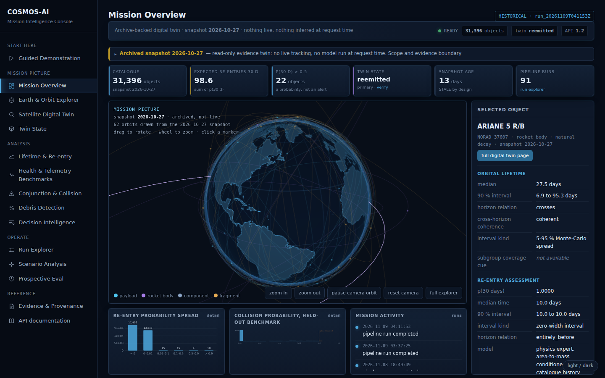

Knowing When
Orbits End
COSMOS-AI is a unified framework for space-debris detection and atmospheric re-entry prediction. It pairs orbit-averaged drag physics with modern tabular learning, and evaluates both the way an operator actually has to: forward in time, with survivors counted and nothing chosen on the test set.

Four capabilities, one evidence chain
Each capability is validated on its own public benchmark and carries its own limits. Nothing is fused across modules unless a dataset actually links the objects.
Orbital lifetime & re-entry
Quantile forecasts of how long an uncontrolled object stays in orbit, from a King-Hele drag expert with NRLMSIS 2.1 densities, seven learned predictors, and a reliability-gated fusion of the two. Intervals are conformalised.
Debris detection
Optical detection of faint geostationary debris streaks on the SpotGEO benchmark, reported against both a classical baseline and the published challenge winner.
Satellite health
Telemetry anomaly detection on ESA-ADB and OPS-SAT-AD, run as pre-registered hypotheses so that refuted ones stay reported.
Conjunction & decision support
Collision-risk scoring on the Kelvins challenge data, and an auditable priority ordering that is kept strictly separate from physical probability.
Three measurements, reported as they came out
Catalogue features carry real signal
Every predictor beats a feature-free oracle that uses the test set's own marginal quantiles — by at least 9 % and by up to 66 % in pinball loss, at all three origins.
Model selection does not transfer
Tuning-fold and test rankings are uncorrelated (Spearman 0.000). Picking the learner with the best tuning loss cost +18.7 % excess test loss at origin 2016.
The intervals fail in one specific place
Nominal 80 % intervals cover 92.3 % at origin 2011 but only 71.7 % at 2016 — and just 56.3 % for objects whose area-to-mass ratio comes from design data.
A negative result we do not hide
The reliability-gated fusion that this project deploys is not consistently better than the strongest individual learned model. It ranks third of twelve arms at origin 2011 and seventh at 2016, where two pretrained tabular models beat it with paired bootstrap intervals that exclude zero. It is retained because the alternatives failed criteria fixed in advance, and its limits are exposed in the console rather than smoothed over.
Where to go next
Live demonstration →
The mission intelligence console: 19 screens over an archived twin of 31,396 objects.
Methodology →
Architecture, data pipeline, the drag physics and every model actually used.
Documentation →
Reports, dataflow and metrics, diagrams and the reproducibility record.
Source code →
The full framework, datasets via Git LFS, and the archived result files.